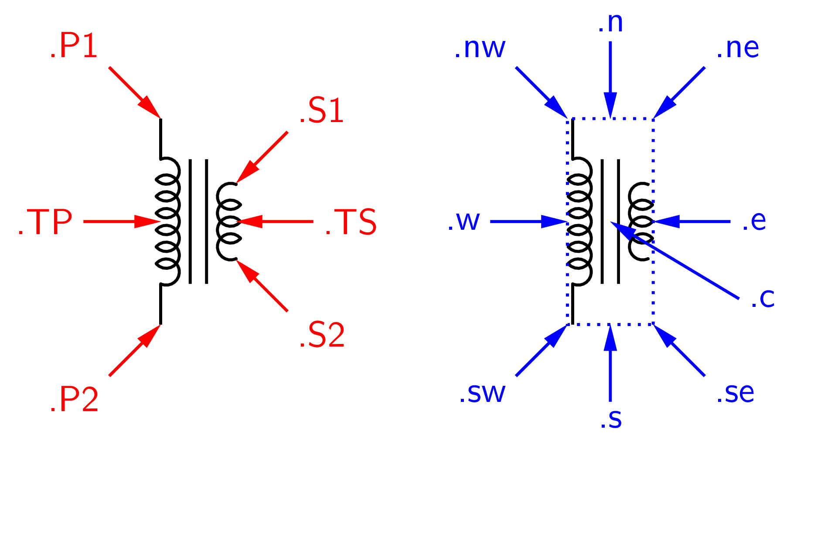

Multipóly #
Zložitejšie elektronické prvky, Obr. 27, majú zvyčajne viacej ako dva pripojovovacie uzly. V teórii systémov je často používaný pojem štvorpól, ktorý má dva vstupné a dva výstupné uzly. Okrem štandardných atribútov má multipól ešte doplňujúce atribúty súvisiace s polohou uzlov a označením uzlov.
{kind=link}
Obr. 27 Príklady multipólov definovaných v CircuitMacros.#
Zdrojový kód
.PS
pi=3.14159265359
# parametre z PIC (resp. GNU PIC)
scale = 2.54 # cm - jednotka pre obrazok
maxpswid = 30 # rozmery obrazku
maxpsht = 30 # 30 x 30cm, default je 8.5x11 inch
cct_init # inicializacia lokalnych premennych
arrowwid = 0.127 # parametre sipok - sirka
arrowht = 0.254 # dlzka
include(lib_base.ckt)
log_init;
Origin: Here
up_;
move to Here;
TR: transformer(down_ 2,L,7,W,4); {"`transformer'" at (Here.x-2.5, TR.c.y); }
move to Here+(0,0.5);
GG: gyrator; {"`gyrator'" at (Here.x-2.5, GG.c.y); }
move to Here+(0,0.5);
TT: bi_tr(up_,,,E) ; {"'bi_tr'" at (Here.x-2.5, TT.c.y); }
move to Here+(0,0.5);
HH: Header(2, 6,,,fill_(0.9)); {"`Header'" at (Here.x-2.5, HH.c.y); }
move to Origin + (4,0);
NN: nport; {"`nport'" at (Here.x +2.5, NN.c.y); }
move to Here+(0,1.2);
OP: opamp(right_); {"`opamp'" at (Here.x +2.5, OP.c.y); }
move to Here+(0,0.8);
CC: contact; {"`contact'" at (Here.x +2.5, CC.c.y); }
move to Here+(0,0.8);
G1: NAND_gate(4); {"`NAND_gate'" at (Here.x +2.5, G1.c.y); }
.PE
Typickým multipólom je transformátor, makro pre jeho zobrazenie má tvar, Obr. 28:
transformer(linespec,L|R,np,[A|P][W|L][D1|D2|D12|D21],ns)
parametre:
linespec - orientácia a dĺžka prícodov
np - počet závitov primárneho vinutia
ns - počet závitov sekundárneho vinutia
L | R - poloha primárneho vinutia vlavo (L) alebo vpravo (R)
W | L - tvar zobrazenia vinutia široké (W) alebo jednoduché (L)
A | P - zobrazenie bez jadra (A) alebo s jadrom (P)
D1 | D2 | D12 | D21 - označenie začiatku vinutia
atribúty:
.s .w .n. .e - stredy strán obrysu
.sw .se .nw .ne - rohy obrysu
.P1 .P2 - poloha koncov primárneho vinutia
.S1 .S2 - poloha koncov sekundárneho vinutia
.TP .TS - poloha stredov vinutia
{kind=link}

Obr. 28 Atribúty multipólu transformer().#
Umiestňovanie multipólov #
Na pracovnej ploche môžeme umiestňovať multipóly niekoľkými spôsobmi:
Zadaním východzieho bodu kreslenia presunom kurzora, objekt sa umiestni na ploche v smere ukladania v polohe príslušného atribútu .n, .s, .w .e:
move to pos; object( dir length, ... );
Umiestnením zvoleného terminálu multipólu do určenej polohy:
object( ...) with .attribute at pos;
Rovnako ako v prípade dvojpólov môžeme pomocou makier definovať smer ukladania objektov. V prípade multipólov zmena smeru ukladania nie je univerzálna a závisí od implementácie makra objektu:
Point_(degrees); object; point_(radians); object; rpoint_(rel linespec); object
Príklad použitia, Obr. 29:
right_; move to (1,1.);
transformer(down_ 1.5,L,4,W,4); # (1)
R1: resistor(right_ 2 from (3,2));
transformer(down_ 1.5,L,4,W,4) with .P1 at R1.end; # (2)
move to (2.5,1);
Point_(90); opamp; # (3)
{kind=link}

Obr. 29 Príklady umiestňovania multipólov.#
Použitie #
Použitie atribútov mnohopólu demonštruje nasledujúci príklad, Obr. 30. Transformátor je centrálnym elementom a všetky prvky zapojenia sú umiestňované relatívne voči jeho terminálom.
TR: transformer(down_ 2,L,7,W,4);
"1" at TR.P1 rjust below; # popis transformatora
"2" at TR.P2 rjust above;
"3" at TR.S1 ljust above;
"4" at TR.S2 ljust below;
"$TR_1$" at TR.n above;
line from TR.P1 left_ 1; # privody vlavo
TC1: tconn(0.5,O);
line from TR.P2 left_ 1;
TC2: tconn(0.5,O);
line from TR.S1 up_ to (TR.S1.x, TC1.y) then right_ 0.5;
D1: diode(1); llabel(,D_1,); # usmerňovač
dot;
{ tconn(1, O); }
{C1: capacitor(down_ 2); llabel(,C_1,); }
line from TR.S2 down_ to (TR.S2.x, TC2.y) then to C1.end;
dot;
tconn(right_ 1, O);
{kind=link}
Obr. 30 Použitie atribútov mnohopólu.#
Zdrojový kód
.PS
pi=3.14159265359
# parametre z PIC (resp. GNU PIC)
scale = 2.54 # cm - jednotka pre obrazok
maxpswid = 30 # rozmery obrazku
maxpsht = 30 # 30 x 30cm, default je 8.5x11 inch
cct_init # inicializacia lokalnych premennych
arrowwid = 0.127 # parametre sipok - sirka
arrowht = 0.254 # dlzka
include(lib_base.ckt)
TR: transformer(down_ 2,L,7,W,4);
"1" at TR.P1 rjust below;
"2" at TR.P2 rjust above;
"3" at TR.S1 ljust above;
"4" at TR.S2 ljust below;
"$TR_1$" at TR.n above;
line from TR.P1 left_ 1;
TC1:tconn(0.5,O);
line from TR.P2 left_ 1;
TC2:tconn(0.5,O);
line from TR.S1 up_ to (TR.S1.x, TC1.y) then right_ 0.5;
D1: diode(1); llabel(,D_1,)
DT1: dot;
{tconn(1, O); }
{C1: capacitor(down_ 2); llabel(,C_1,) }
line from TR.S2 down_ to (TR.S2.x, TC2.y) then to C1.end;
DT2:dot;
{tconn(right_ 1, O); }
.PE